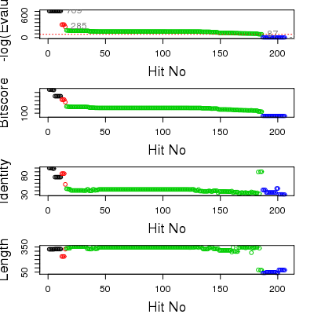

blast.pdb(seq, database = "pdb")
Run NCBI blastp, on a given sequence, against the PDB, NR and swissprot sequence databases.
This function employs direct HTTP-encoded requests to the NCBI web server to run BLASTP, the protein search algorithm of the BLAST software package.
BLAST, currently the fastest and most popular pairwise sequence comparison algorithm, performs gapped local alignments, through the implementation of a heuristic strategy: it identifies short nearly exact matches or hits, bidirectionally extends non-overlapping hits resulting in ungapped extended hits or high-scoring segment pairs (HSPs), and finally extends the highest scoring HSP in both directions via a gapped alignment (Altschul et al., 1997)
For each pairwise alignment BLAST reports the raw score, bitscore and an E-value that assess the statistical significance of the raw score. Note that unlike the raw score E-values are normalized with respect to both the substitution matrix and the query and database lengths.
Here we also return a corrected normalized score (mlog.evalue) that in our experience is easier to handle and store than conventional E-values. In practice, this score is equivalent to minus the natural log of the E-value. Note that, unlike the raw score, this score is independent of the substitution matrix and and the query and database lengths, and thus is comparable between BLASTP searches.
A list with seven components: bitscore a numeric vector containing the raw score for each alignment. evalue a numeric vector containing the E-value of the raw score for each alignment. mlog.evalue a numeric vector containing minus the natural log of the E-value. gi.id a character vector containing the gi database identifier of each hit. pdb.id a character vector containing the PDB database identifier of each hit. hit.tbl a character matrix summarizing BLAST results for each reported hit, see below. raw a data frame summarizing BLAST results, note multiple hits may appear in the same row.
Grant, B.J. et al. (2006) Bioinformatics 22, 2695--2696.
‘BLAST’ is the work of Altschul et al.: Altschul, S.F. et al. (1990) J. Mol. Biol. 215, 403--410.
Full details of the ‘BLAST’ algorithm, along with download and installation instructions can be obtained from: http://www.ncbi.nlm.nih.gov/BLAST/.
Online access is required to query NCBI blast services.
pdb <- read.pdb("1bg2")Note: Accessing online PDB file HEADER MOTOR PROTEIN 04-JUN-98 1BG2blast <- blast.pdb( pdbseq(pdb) )Searching ... please wait (updates every 5 seconds) RID = 7V739MYC01R . Reporting 63 hitshead(blast$hit.tbl)queryid subjectids identity positives alignmentlength [1,] "unnamed" "gi|3114353|pdb|2KIN|A" "85.23" "92.83" "237" [2,] "unnamed" "gi|3891776|pdb|3KIN|A" "85.23" "92.83" "237" [3,] "unnamed" "gi|3891778|pdb|3KIN|C" "85.23" "92.83" "237" [4,] "unnamed" "gi|17942987|pdb|1GOJ|A" "56.79" "71.91" "324" [5,] "unnamed" "gi|160286521|pdb|3B6U|A" "45.21" "61.38" "334" [6,] "unnamed" "gi|160286522|pdb|3B6U|B" "45.21" "61.38" "334" mismatches gapopens q.start q.end s.start s.end evalue bitscore [1,] " 34" " 1" " 1" "236" " 2" "238" "8.0e-151" "427.0" [2,] " 34" " 1" " 1" "236" " 2" "238" "8.0e-151" "427.0" [3,] " 34" " 1" " 1" "236" " 2" "238" "8.0e-151" "427.0" [4,] "134" " 3" " 6" "323" " 7" "330" "9.0e-125" "365.0" [5,] "163" " 7" " 7" "323" "23" "353" " 1.0e-83" "261.0" [6,] "163" " 7" " 7" "323" "23" "353" " 1.0e-83" "261.0"top.hits <- plot(blast)* Possible cutoff values include: 285 88 -1 Yielding Nhits: 4 55 63 ** Chosen cutoff value of: 88 Yielding Nhits: 55
head(top.hits$hits)pdb.id gi.id group 1 "2KIN_A" "3114353" "1" 2 "3KIN_A" "3891776" "1" 3 "3KIN_C" "3891778" "1" 4 "1GOJ_A" "17942987" "1" 5 "3B6U_A" "160286521" "2" 6 "3B6U_B" "160286522" "2"